Okuduğun her kitap bir sefer.
Peron, okuma listeni bir kütüphane fişi gibi tutar. Her kitap bir bilet, her seri bir hat. Bitirdiğinde biletini zımbalarsın.
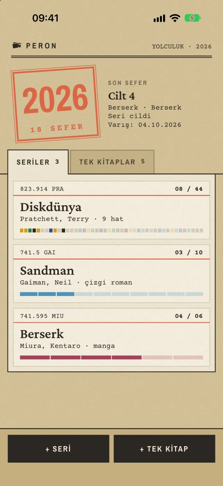
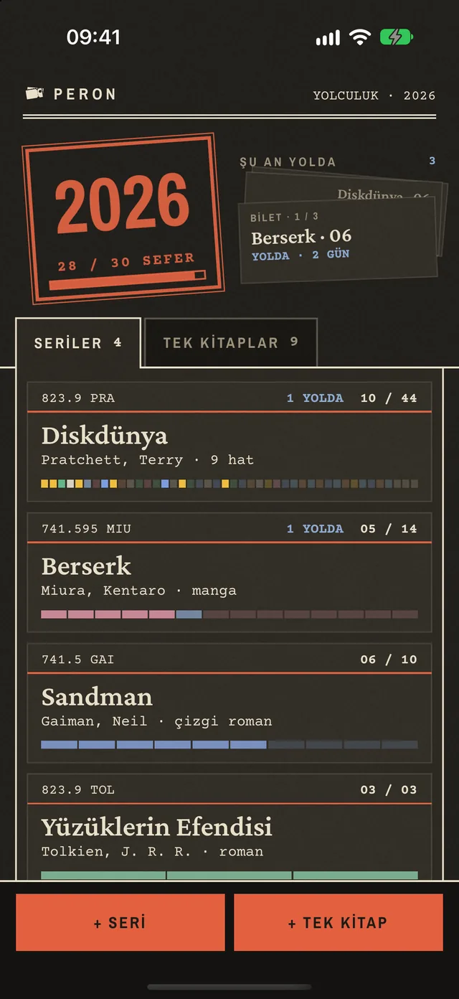
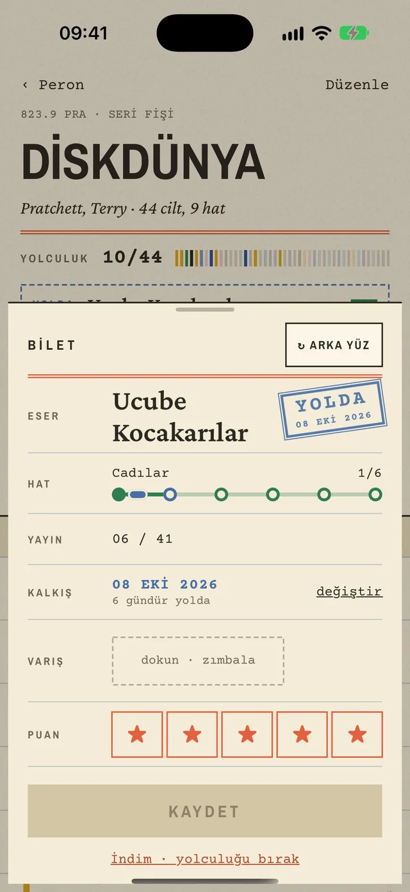
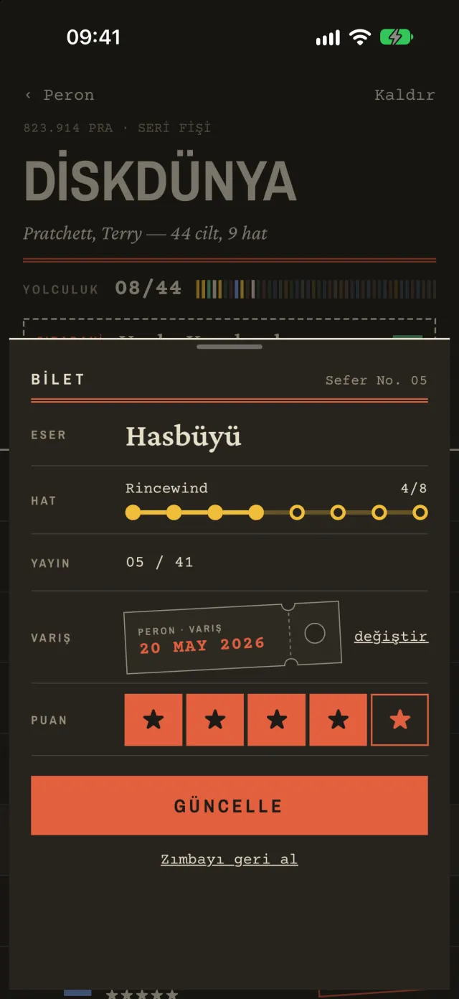
Kalkıştan varışa üç adım.
-
DURAK 01
Kitabını ekle
Seri mi, tek kitap mı? Adını, yazarını ve türünü yaz. Peron kitabın fişini açar.
-
DURAK 02
Yola çık
Okumaya başlayınca biletine kalkış günü basılır. Peron kaç gündür yolda olduğunu sayar. Sıradaki durak seri fişinin en üstünde bekler.
-
DURAK 03 · VARIŞ
Biletini zımbala
Bitirince biletini zımbala. Varış günün, puanın ve yolculuğun kaç gün sürdüğü bilete basılır. Yıl damgasına bir sefer eklenir.
Yolculuk boyunca yanında.
Seriler ve renkli hatlar
Uzun bir seriyi okuma sıralarına böl. Her sıra ayrı renkte bir hat olur. Peron haritası bütün hatları bir metro şeması gibi gösterir.
Tek kitaplar çekmecesi
Seriye bağlı olmayan kitaplar bu çekmecede durur. Aynı yazardan iki kitap okuyunca o yazarın hattı açılır.
Yolda ve zımbalı bilet
Şu an okuduğun kitaplar yolda. Ana ekranda bir deste olarak durur. Bitirince biletini zımbalarsın, varış günün ve puanın bilete yazılır.
Biletin arkası
Bileti çevir. Arkasına kitaptan sevdiğin cümleleri ve kendi notunu yaz. Her kitaba beş alıntı ve bir not sığar.
Bileti paylaş
Biletini Instagram hikâyesi ya da gönderi boyunda bir görsel yap. İstersen bir alıntın da bilete eklenir.
Yıl damgası ve hedef
Bu yıl kaç sefer yaptığını ana ekrandaki kırmızı damga söyler. Yıllık hedef koyarsan ne kadar kaldığını da gösterir.
Kalkış panosu
Yılın okumaları gar panosu gibi dönen harflerle dolar. Aylara ve türlere göre seferler, ortalama yolculuk, en uzun yolculuk.
Romandan şiire, çizgi romandan mangaya
Roman, öykü, şiir, deneme, tiyatro, manga, çizgi roman, anı ve kurgu dışı. Hepsi aynı listede.
Kayıtlar hesabında
Üye olmadan da kullanabilirsin. Apple ya da e-postayla giriş yaparsan telefonun değişse de biletlerin kaybolmaz. Hesabını istediğin an uygulamadan silebilirsin.
Fotoğrafla kitap ekle
Seri ve tek kitap eklerken kapağın ya da arkadaki barkodun fotoğrafını çek. Peron adı ve yazarı bulup forma yazar. Fotoğraf telefonda okunur, hiçbir yere gönderilmez.
Gece baskısı
Karanlık modda fişler koyu kartona döner, mürekkep krem rengi olur. Gece gözünü yormaz.
Akademik okumaların da bir hattı var.
Peron’da Akademi ayrı bir sekme. Her araştırma konusu bir hat, her makale o hattın bir durağı. Tez yazarken ya da literatür tararken okuduklarını kaybetmezsin, kaynakçan hazır durur.
Araştırma hatları
Makale, bildiri, kitap bölümü, tez, rapor ve proje bir hattın durağı olur. Bir makale iki hatta birden durabilir. Buna aktarma durağı denir.
DOI yapıştır, künye gelsin
DOI’yi yapıştırınca yazar, dergi, yıl ve sayfa künyesi kendiliğinden dolar. Açık erişimli PDF varsa Peron onu da bulur. İstersen elle ya da fotoğraftan eklersin.
Fotoğraftan kaynak
Kaynakçanın, makalenin ilk sayfasının ya da kitap kapağının fotoğrafını çek. Yazı telefonunda okunur, künyeler bulunur. Fotoğraf hiçbir yere gönderilmez.
Paylaş menüsünden ekle
Safari’de bir makale sayfasındayken ya da bir PDF açıkken Paylaş’a bas, Peron’a ekle. Hangi hatta gideceğini seçersin.
Ödünç kartı ve APA 7
Her makalenin bileti bir ödünç kartı. Arkasına alıntılarını, literatür notunu yazarsın. APA 7 künyesi ve metin içi atıf hazır durur. Tek dokunuşla kopyalarsın.
Hattın kaynakçası
Bir hattın bütün kaynaklarını APA 7 kaynakça olarak kopyala. Zotero, Mendeley ya da EndNote için RIS ve BibTeX dosyası al.
Zotero’dan al
Zotero kitaplığını RIS ya da BibTeX dosyasıyla getir. İstersen Zotero hesabının okuma anahtarını gir. Anahtar saklanmaz. Zaten Peron’da olan kaynaklar ikinci kez eklenmez.
Sefer defteri ve haftalık hedef
Akademi sekmesinin üstünde son 8 haftanın ızgarası durur. Haftalık hedef koyarsın, hedefi tutan hafta zımbalanır. Eski hedeflerin saklanır.
Akademi haritası
Hatların bir metro şeması gibi çizilir. Aktarma duraklarını ve hangi konuların birbirine değdiğini bir bakışta görürsün.
Hattını paylaş
Bir hattı bağlantıyla danışmanına ya da arkadaşına göster. Bağlantıyı açan kişinin üye olması gerekmez. Alıntı ve notlarını açıp kapatırsın, paylaşımı istediğin an durdurursun.
Günün alıntısı
Ana ekrana bir widget koy. Biletlerinin arkasına yazdığın alıntılardan biri her gün karşına çıkar.
Bilgisayardan da bak.
Peron web, Akademi’ni bilgisayarda okumak için. Kaynakça yazarken yanında açık tutabilirsin.
-
DURAK 01
Adresi aç
getperon.app/akademi adresini bilgisayarının tarayıcısında aç.
-
DURAK 02
Aynı hesapla gir
Uygulamadaki e-posta ve şifrenle giriş yap. Apple ile üye olduysan uygulamadaki giriş ekranından Şifremi unuttum’a bas ve bir şifre belirle.
-
DURAK 03 · VARIŞ
Oku ve kopyala
Hatlarını, ödünç kartlarını ve alıntılarını gör. Hattın kaynakçasını ya da tek bir kaynağı APA 7 olarak kopyala. Bütün akademiyi RIS ya da BibTeX olarak indir. Web yalnızca okumak içindir. Ekleme ve düzenleme uygulamada yapılır.
Peronun içinden.
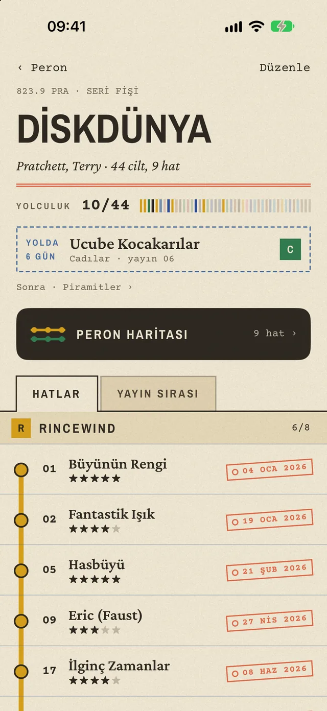
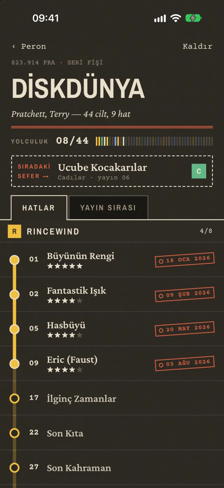
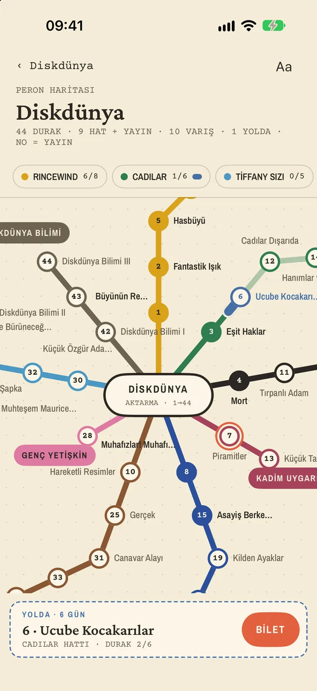
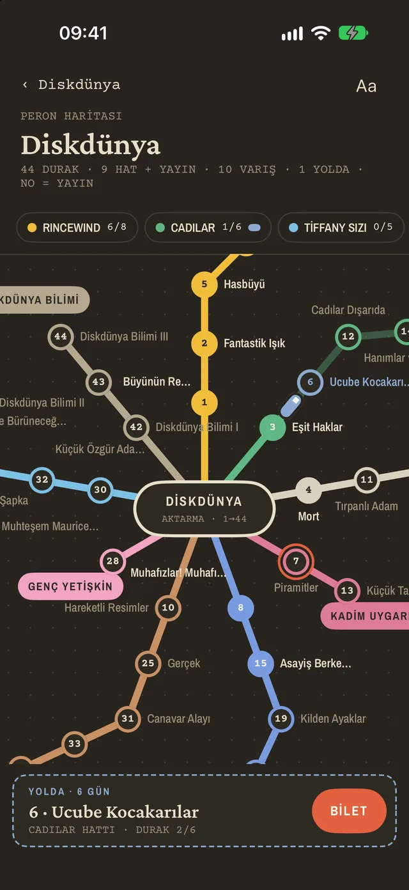
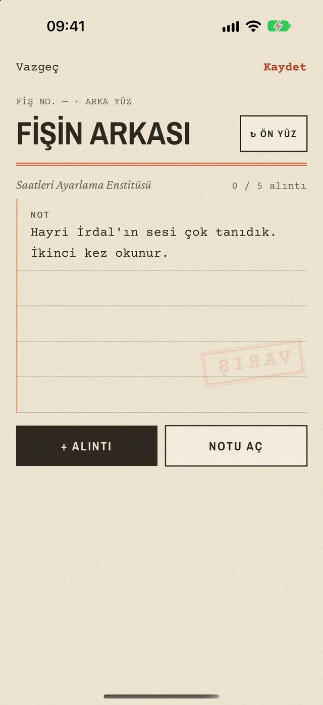
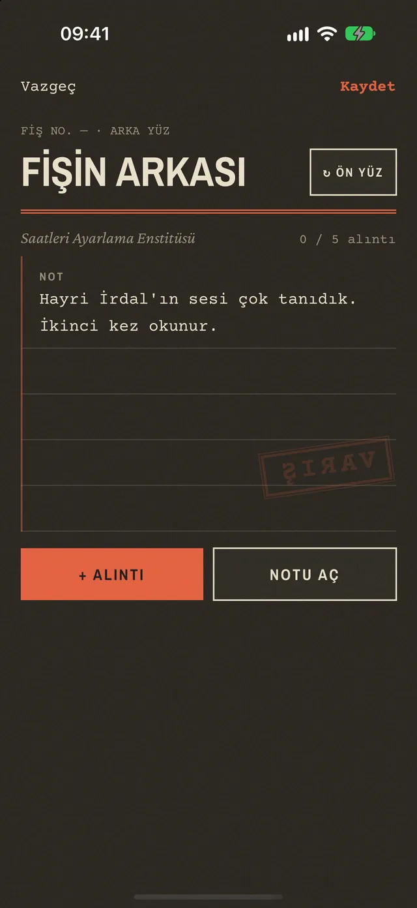
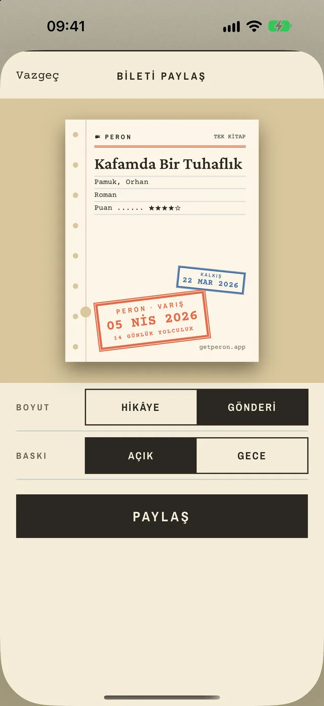
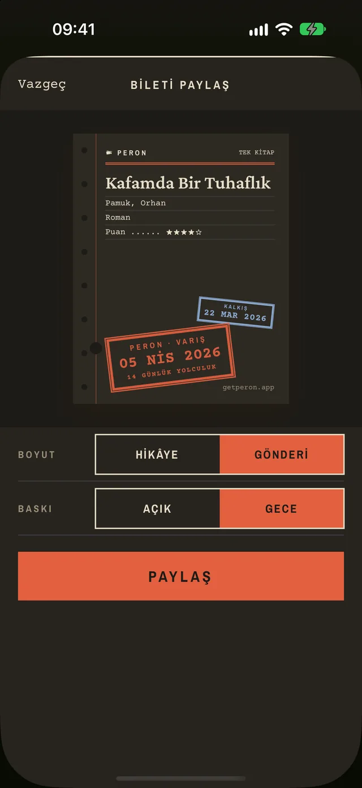
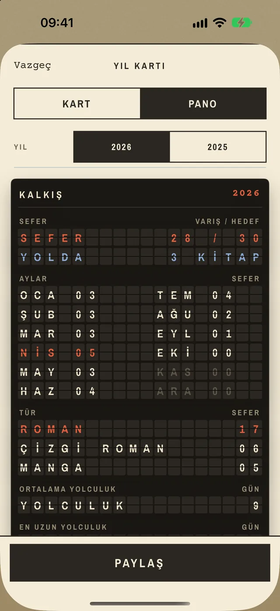
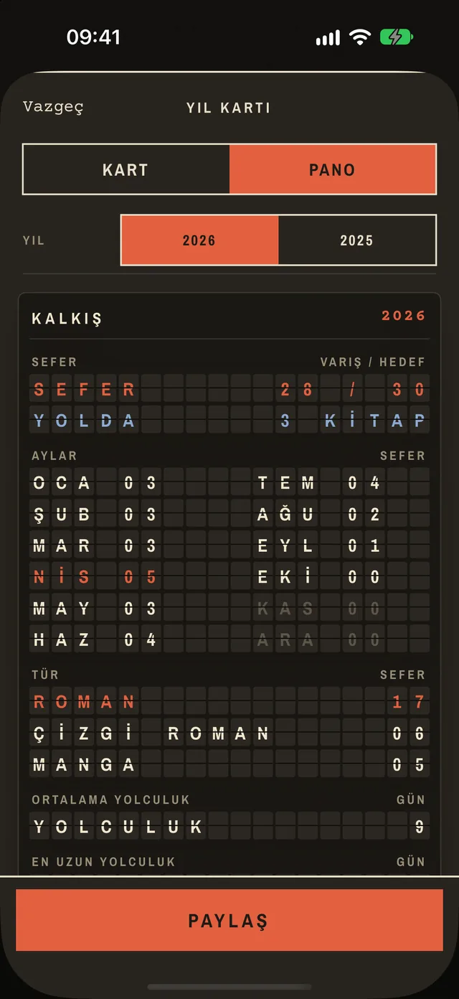
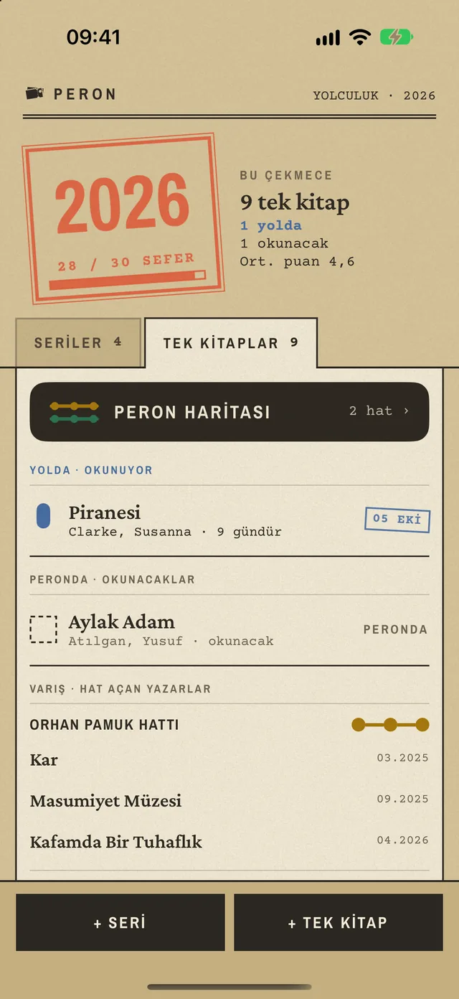
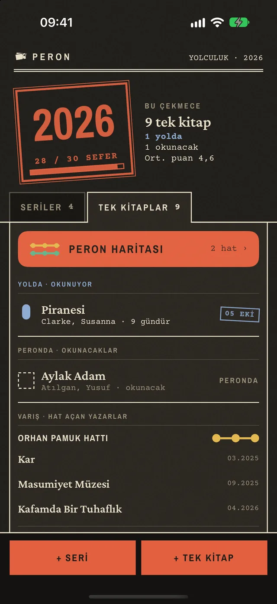